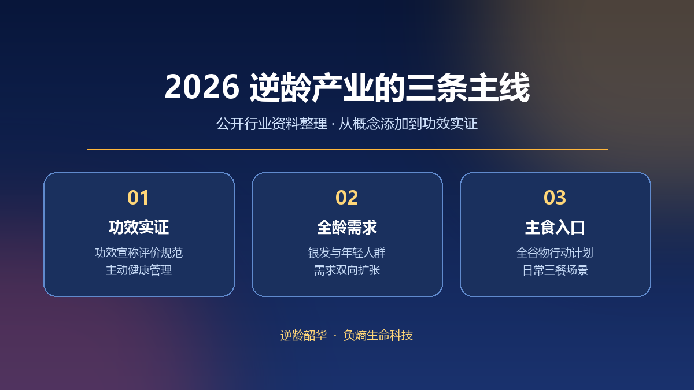

2026 年多份公开行业报告把抗衰老产业放在「从概念添加迈向功效实证」的位置。不同统计口径给出的读数差异明显：消费级抗衰产品与服务市场 2026 年预测约 1532 亿元，另有行业预测把同年规模估到 2240 亿元；《中国抗衰老产业年度报告》以医疗医药、康复运动、食品保健、器械服务等八大门类的宽口径，给出总体规模突破万亿元的判断。统计边界不同，数字不宜直接横向比较。
主线一：功效宣称走向证据
《化妆品监督管理条例》配套的《化妆品功效宣称评价规范》要求抗皱、紧致等功效宣称提供人体功效评价或消费者使用测试数据；《「健康中国 2030」规划纲要》进入收官阶段，健康老龄化与主动健康管理被列为重点方向。政策组合并未简单收紧，而是把行业从「讲故事」推向「讲证据」，为具备研发与验证能力的主体留出空间。
与规模扩张同步的是结构变化。2025 年口服美容品市场约 255.7 亿元，其中口服抗衰以 105.84 亿元占 41.39%；抗衰护肤品零售额 832 亿元，医美抗衰约 669.5 亿元。公开资料还显示，2025 年 7 月至 2026 年 6 月「长寿科学」的全网声量同比增长 107.1%，产业叙事正从单一护肤向生命质量管理迁移。
主线二：需求从银发扩展到全龄
老龄化构成底层支撑，2025 年全国 60 岁及以上人口规模约 3.2 亿。另一条线是年轻消费者提前入场，公开调研数据显示 53.2% 的消费者在 26 至 35 岁开始注重抗衰老，31 至 35 岁人群在抗衰购买中的占比由 20.7% 升至 23.4%。需求起点前移，把消费周期从阶段性修护拉长为长期管理。
主线三：主食成为日常入口
2026 年 10 月，国家粮食和物资储备局相关负责人介绍全谷物行动计划进展：国家层面制修订相关标准 18 个，国家标准《全麦粉》于 2026 年 11 月实施，《全谷物食品命名与标示要求》将于 2027 年 2 月实施；「十四五」国家重点研发计划在口感改善、保质期延长、方便化加工等方面形成系列成果，各地研发创新产品 495 个。公开表述把全谷物主食替代部分精米白面称为一种主动健康、「治未病」的生活方式。
对逆龄产业而言，主食类产品的意义在于高频、可长期坚持的消费场景。逆龄韶华公开的四层产业逻辑链把健康、长寿、抗衰与逆龄视为需求逐级升级的层级，负熵小米对应的是把理念落到一日三餐的路径。